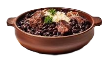
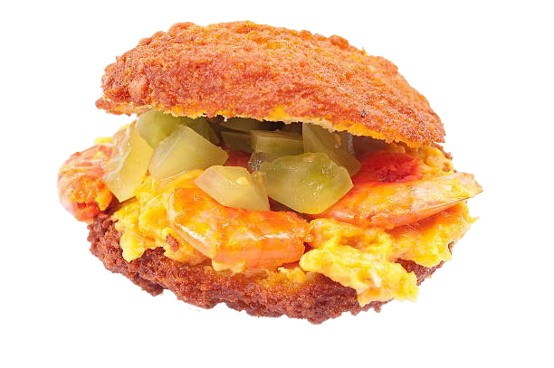
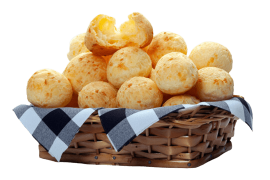
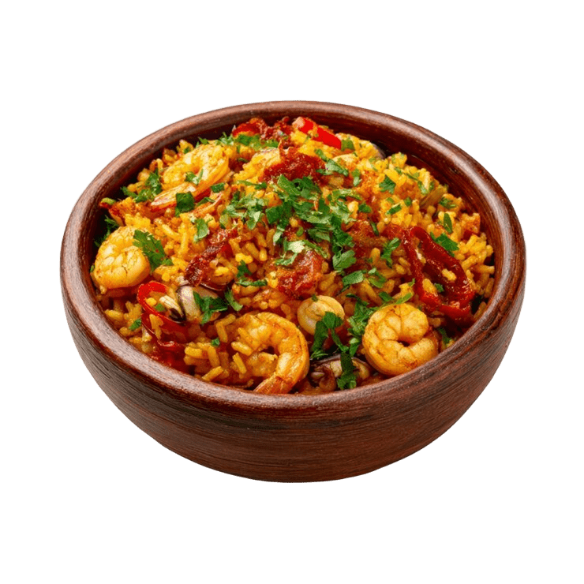
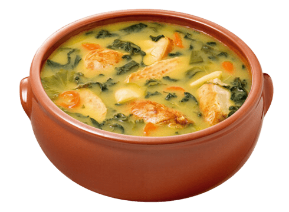

Gastronomia Brasileira
Tradições e Sabores
A Culinária Brasileira é uma das mais ricas e diversificadas do mundo, resultado direto da mistura de diferentes povos e culturas ao longo da história. Suas raízes vêm principalmente da influência indígena, africana e europeia (especialmente portuguesa), que juntas formaram uma identidade gastronômica única, marcada por sabores intensos, cores vibrantes e ingredientes naturais.
Os povos indígenas contribuíram com alimentos essenciais como a mandioca, o milho e diversas técnicas de preparo. Já os africanos trouxeram temperos fortes, o uso do azeite de dendê e pratos cheios de personalidade. Os portugueses, por sua vez, influenciaram com receitas mais elaboradas, uso de carnes, doces e técnicas culinárias europeias. Ao longo do tempo, outras culturas, como a italiana, alemã e japonesa, também deixaram sua marca em diferentes regiões do país.
A culinária brasileira também é muito ligada às tradições e ao cotidiano das pessoas. Muitas receitas são passadas de geração em geração e estão presentes em festas, encontros familiares e celebrações culturais. Além disso, cada região do Brasil possui seus próprios ingredientes típicos e formas de preparo, o que torna a gastronomia ainda mais diversa.
Principais Sabores Brasileiros

Feijoada – Considerada o prato símbolo do país, é uma mistura suculenta de feijão preto com diversas carnes de porco. Geralmente é servida com arroz branco, couve refogada, farofa e fatias de laranja. É o clássico das quartas e sábados brasileiros.
Churrasco – Tradicional do Rio Grande do Sul, o churrasco brasileiro é famoso mundialmente. O destaque é o preparo da carne em espetos ou grelhas, temperada apenas com sal grosso. A Picanha é a estrela incontestável dessa categoria.

Acarajé - A principal comida de rua do Brasil. É um bolinho de massa de feijão-fradinho frito no azeite de dendê, recheado com vatapá, caruru, camarão seco e vinagrete. Representa a força da herança africana na nossa mesa.

Pão de queijo – O queridinho de Minas Gerais que conquistou o mundo. Feito com polvilho (doce ou azedo) e queijo curado, é o acompanhamento obrigatório para um "cafézinho" à tarde em qualquer roteiro pelo interior do país.

Moqueca – A principal comida de rua do Brasil. É um bolinho de massa de feijão-fradinho frito no azeite de dendê, recheado com vatapá, caruru, camarão seco e vinagrete. Representa a força da herança africana na nossa mesa.

Tacacá – Um prato exótico e vibrante da região amazônica. É um caldo feito com tucupi (sumo da mandioca brava), goma de mandioca, camarão seco e jambu — uma erva que causa uma leve e famosa dormência na boca.